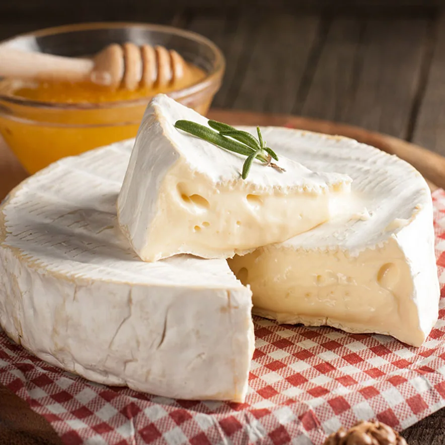

BIENVENIDO AL
WIKIRESTAURANTE DE QUESOS
¡Bienvenido a nuestra tienda de quesos!
¡Bienvenido a la Wikipedia de quesos! Tu lugar ideal para descubrir todo lo relacionado con el queso, desde quesos únicos hasta recetas sorprendentes con queso. Explora nuestra enciclopedia, donde podrás conocer a fondo los secretos detrás de cada uno de ellos. Inspírate con nuestras recetas especialmente diseñadas para resaltar lo mejor de lo que ofrecemos. Además, no te pierdas nuestro blog, donde compartimos curiosidades y algunas ideas de entretenimiento. Si tienes alguna consulta, no dudes en contactarnos, ¡estamos aquí para ayudarte!
Productos Destacados

